<!DOCTYPE html PUBLIC "-//W3C//DTD XHTML 1.0 Strict//EN" "http://www.w3.org/TR/xhtml1/DTD/xhtml1-strict.dtd">
<!--
Design by TEMPLATED
http://templated.co
Released for free under the Creative Commons Attribution License

Name       : Assiduous  
Description: A two-column, fixed-width design for 1024x768 screen resolutions.
Version    : 1.0
Released   : 20100403

-->
<html xmlns="http://www.w3.org/1999/xhtml">
<head>
<meta http-equiv="content-type" content="text/html; charset=utf-8" />
<title>Computational Memory Lab</title>
<meta name="keywords" content="" />
<meta name="description" content="" />
<link href="style.css" rel="stylesheet" type="text/css" media="screen" />
<link href="https://fonts.googleapis.com/css2?family=Inter:wght@400;500;600;700&family=Playfair+Display:wght@700&display=swap" rel="stylesheet">
</head>
<style>
img {
	display: inline-block;
}
</style>

<body class="page-team">
<div id="header-wrapper">
	<div id="header">
		<div id="menu">
			<ul>
				<li><a href="index.html" class="first">Home</a></li>
				<li class="current_page_item"><a href="research.html">Research</a></li>
				<li><a href="publications.html">Publications</a></li>
				<li><a href="courses.html">Courses</a></li>
				<li><a href="team.html">Our Team</a></li>
			
				<li><a href="contact.html">Contact Us</a></li>
			</ul>
		</div>
		<!-- end #menu -->
		<div id="search">
			<form method="get" action="">
				<fieldset>
					<input type="text" name="s" id="search-text" size="15" />
					<input type="submit" id="search-submit" value="GO" />
				</fieldset>
			</form>
		</div>
		<!-- end #search -->
	</div>
</div>
<!-- end #header -->
<!-- end #header-wrapper -->
<div id="logo">
	<!--br><br><br-->
	<h1><a href="#"> Computational Memory Lab </a></h1>
	<p><em>Studying human memory through computation, behaviour, and brain imaging.</em></p>
	<!--br><br><br><br><br-->
	<!----
	-->
</div>
<hr />


<!-- end #logo -->
<div id="page">
	<div id="page-bgtop">
		<div id="content">
			<div class="post">
				<!--<p class="meta"><span class="date">Sunday, April 26, 2009</span> 7:27 AM Posted by <a href="#">Someone</a></p>-->
				<h2 class="title"><a href="#">Our Team   </a></h2>
				<div class="entry">
					<!--<
					<p> </p>
				</div>
			</div>
			<div class="post">
				<--<p class="meta"><span class="date">Wednesday, November 25, 2015</span> 7:27 AM Posted by <a href="#">Someone</a></p>-->
				<!--<h2 class="title"><a href="">Members </a></h2>-->	


					</pre>
					<br><br><br><br><br>
					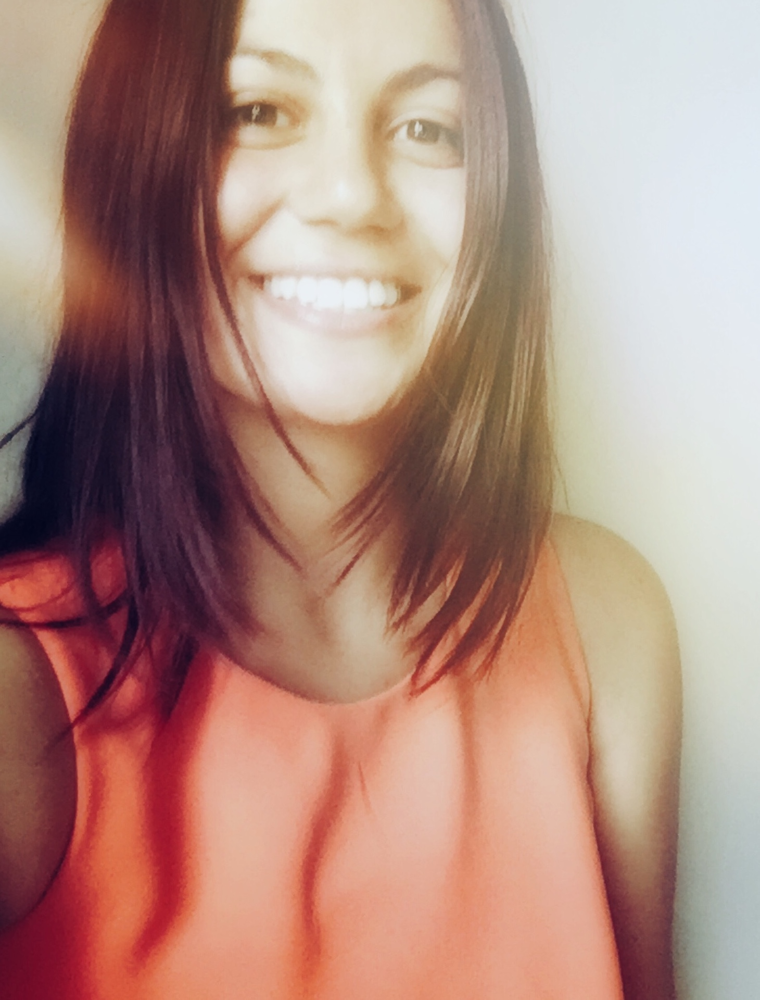
					<pre>
		<h4>
	        Tamari Shalamberidze, PhD student,
		Fall 2019 - present

		"Hi, my name is Tamari and I am a PhD Student at the 
		Neuroscience and Mental Health Institute. I use 
		electroencephalography (EEG) to investigate brain rhythms 
		related to anxiety and memory processes. Despite the 
		fact that anxiety and memory are typically studied separately, 
		they share an EEG correlate, called Frontal Midline Theta 
		(FMT) oscillation. My goal is to discover the neural 
		relationship between anxiety, memory, and FMT."
		</h4>
		Contact: <a href="mailto:shalambe@ualberta.ca?" target="_top">shalambe@ualberta.ca</a>

    			    </pre>
					

<br><br><br><br><br>
						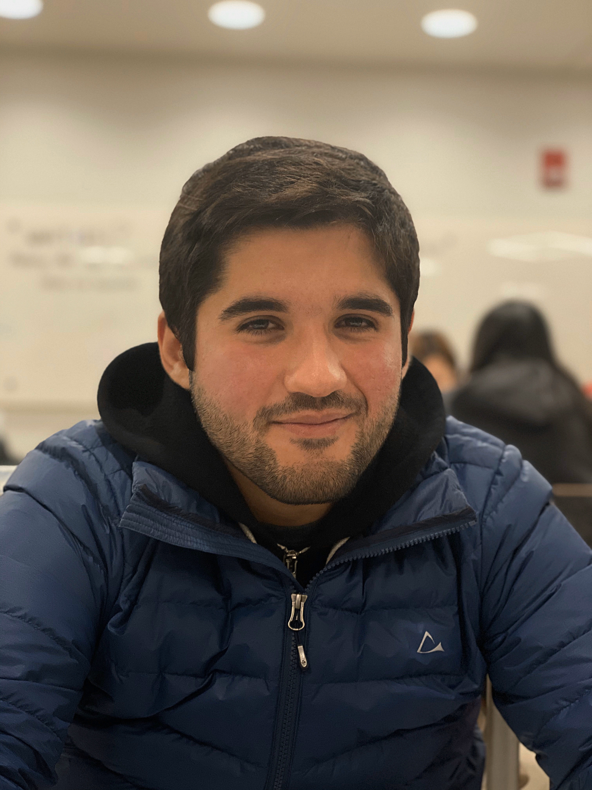
						<pre>

		<h4>
		Amir Shafaghat, Volunteer Research Assistant,
		Winter 2020 - present

		"When given a list of items to study and remember later, most 
		people find it easier to divide the list into groups (chunks) 
		of smaller sizes. Research has shown that such grouping strategies
		are, indeed, effective in improving memory for lists of items, when
		the order of those items is important. My research involves studying
		the effects of different chunking (grouping) approaches on memory
		mechanisms used to store and retrieve lists of complex stimuli."
		</h4>
		Contact: <a href="mailto:shafagha@ualberta.ca?" target="_top">shafagha@ualberta.ca</a>


						</pre>

<br><br><br><br>
						
						<pre>

		<h4>
		Sergio Barra, Masters Student,
		Fall 2021 - present

		"My research is about how memory for a given word is affected by its
 		different meanings and the context that activates such meanings (if
 		one studies RIVER-BANK, BANK is harder to recognize when you think
 		about MONEY). My focus is on testing the predictions given by our 
		mathematical models regarding this effect, and see how they may
 		generalize to other memory phenomena."
		</h4>
		Contact: <a href="mailto:sbarraro@ualberta.ca?" target="_top">sbarraro@ualberta.ca</a>


						</pre>


<br><br><br><br><br><br><br><br><br>
						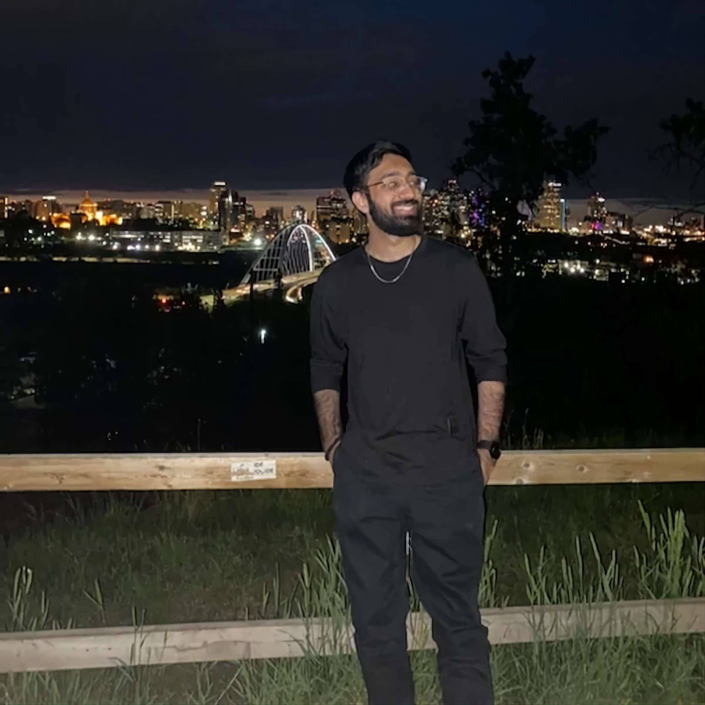
						<pre>

		<h4>
		Ayaan Jutt, Computer Science Undergraduate,
		Winter 2023 - present

		"My name is Ayaan Jutt, an I am currently researching whether or 
		not sleep can retroactively fix the issues of associative interference"
		</h4>
		Contact: <a href="mailto:ajutt@ualberta.ca?" target="_top">ajutt@ualberta.ca</a>


						</pre>


<br><br><br><br><br><br><br><br><br>
		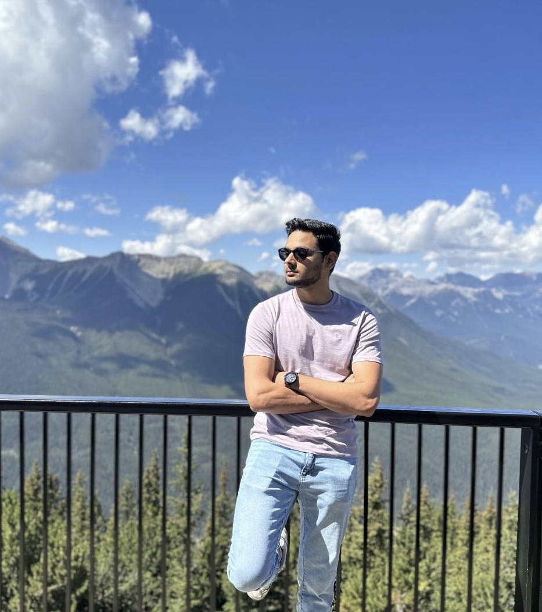
							<pre>

		<h4>
		Muhammad Bilal Khan, Psychology Undergraduate,
		Winter 2023 - present

		"My name is Bilal and I am currently researching 
		how people judge the relative order
		of two items in a list, and the potential
		influences of item similarity on the task"
		</h4>
		Contact: <a href="mailto:mbkhan@ualberta.ca?" target="_top">mbkhan@ualberta.ca</a>


						</pre>


<br><br><br><br><br>


		<br><br><br><br><br>
		
							<pre>

		<h4>
		Madhvi Sharma, Psychology Undergraduate,
		Fall 2023 - present

		"Hi I’m Madhvi! I’m currently working on creating a 
		replication of the Schvaneveldt lexical ambiguity experiment.
		This is to test whether there is a difference in 
		reaction times when dominant vs non-dominant meanings 
		are presented after an ambiguous word."
		</h4>
		Contact: <a href="mailto:madhvi@ualberta.ca?" target="_top">madhvi@ualberta.ca</a>


						</pre>


<br><br><br><br><br>


		<br><br><br><br><br>
		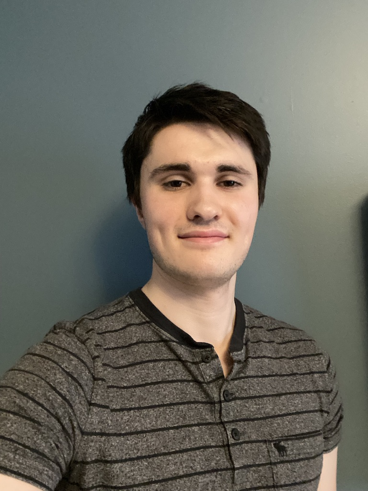
							<pre>

		<h4>
		Kieran Pawluk, Psychology Undergraduate,
		Winter 2024 - present

		"I'm working on improving the BOSC method, which is used to 
		distinguish between oscillatory vs non-oscillatory activity in EEG."
		</h4>
		Contact: <a href="mailto:kpawluk@ualberta.ca?" target="_top">kpawluk@ualberta.ca</a>


						</pre>


<br><br><br><br><br>


		<pre>

		<h4>
		Gaurav Bansal, Psychology Undergraduate,
		Fall 2023 - present

		"My name is Gaurav and I am researching how effectively
		people are able to estimate their recall ability in both
		the forward and backward directions when asked to recall
		a list of consonants."
		</h4>
		Contact: <a href="mailto:gbansal@ualberta.ca?" target="_top">gbansal@ualberta.ca</a>


		<pre>

		<h4>
		Aditi Roy, Psychology Undergraduate,
		Winter 2024 - present

		"My name is Aditi Roy. I'm in my second year of university
		and in the BSc Specialization in Psychology program. My research is 
		centered around word recognition of inverted text and Kolers' 
		proceduralist theory."
		</h4>
		Contact: <a href="mailto:asroy1@ualberta.ca?" target="_top">asroy1@ualberta.ca</a>


						</pre>


		<!--
							<pre>

		<h4>
		Ziad Kadoura, Psychology Undergraduate,
		Spring/Summer 2023 - present

		"My name is Ziad, and I am researching how
		effectively people are able to estimate their 
		ability of recall lists of consonants"
		</h4>
		Contact: <a href="mailto:zkadoura@ualberta.ca?" target="_top">zkadoura@ualberta.ca</a>


						</pre>


					<!--
					<pre>
	<h4>
	Madhawa Alahakoon, 4th year Psychology undergraduate,
	September 2016 - present
	Research interest: </h4>
	Contact: <a href="mailto:alahakoo@ualberta.ca?" target="_top">alahakoo@ualberta.ca</a>
					</pre>


					<br><br><br><br><br><br><br><br>
				</div>
			</div>
			<div class="post">
				<!--<p class="meta"><span class="date">Sunday, April 26, 2009</span> 7:27 AM Posted by <a href="#">Someone</a></p>-->
				<br><br><br><br><br><br><br>
				<h2 class="title"><a href="">Alumni</a></h2>

<br><br><br><br><br><br>
					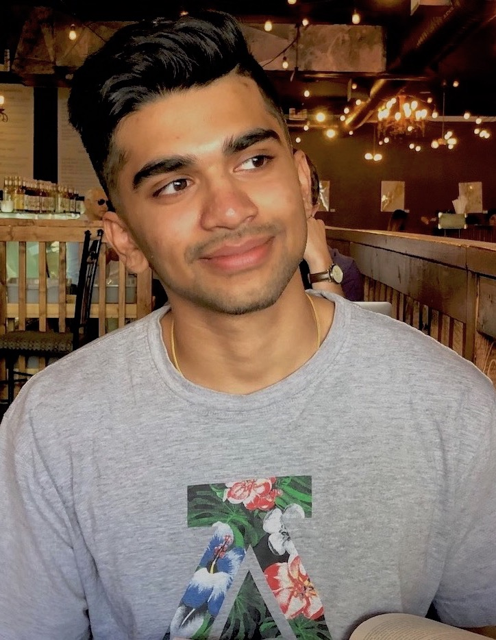
					<pre>
    
		<h4>
		Jeremy Thomas, Masters student,
		Spring/Summer 2018 - Spring/Summer 2023
		</h4>
		Contact: <a href="mailto:jjthomas@ualberta.ca?" target="_top">jjthomas@ualberta.ca</a>
		CV: <a href="JT/JJThomasCV.pdf" target="_top">PDF</a>
					
					
						


						</pre>

<br><br><br><br><br><br><br>
						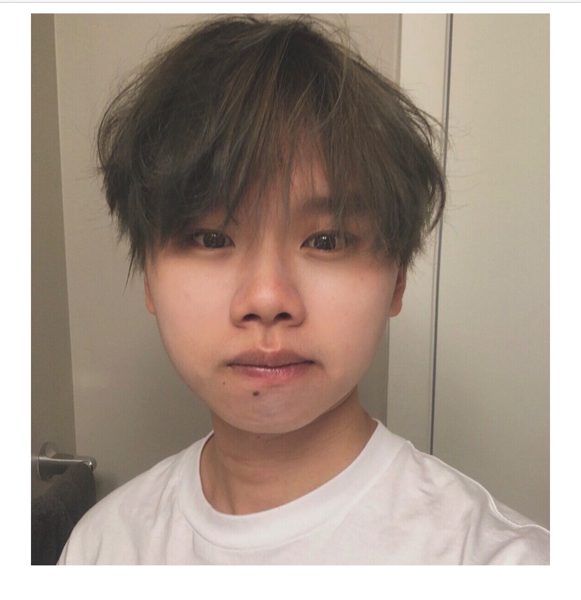
						<pre>

		<h4>
		Shikang Peng, Psychology Undergraduate, volunteer research assistant,
		Winter 2022 - Winter 2023

		
		</h4>
		Contact: <a href="mailto:shikang@ualberta.ca?" target="_top">shikang@ualberta.ca</a>


						</pre>

<br><br><br><br><br><br><br><br>
						
						<pre>

		<h4>
		Naomi Robinson, Psychology Undergraduate,
		Winter 2022 - Summer/Spring 2023
		</h4>
		Contact: <a href="mailto:nrobinso@ualberta.ca?" target="_top">nrobinso@ualberta.ca</a>


						</pre>


    <br><br><br><br><br><br><br><br><br><br><br><br>
					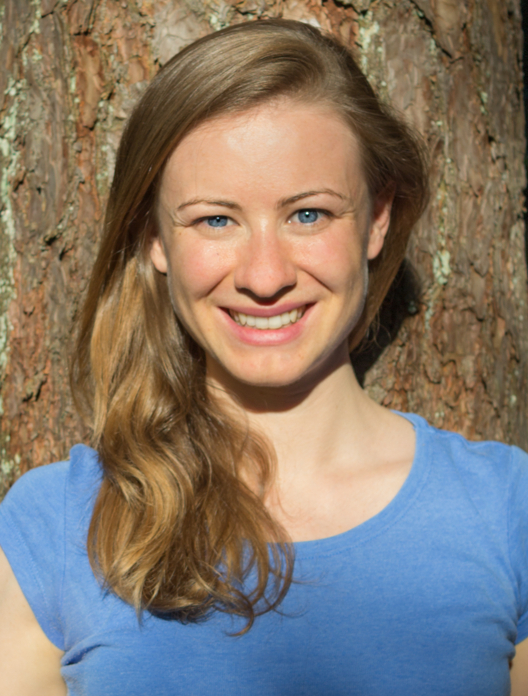
					<pre>
		<h4>
		Felicitas Kluger, PhD student,
		Spring/Summer 2018 - 2022
 
		</h4>
		Contact: <a href="mailto:kluger@ualberta.ca?" target="_top">kluger@ualberta.ca</a>

</pre>
						<br><br><br><br><br><br><br><br><br><br><br><br><br><br><br><br>
						
						<pre>

		<h4>
		Debby Olademeji, Neuroscience Undergraduate ,
		Winter 2019 - 2022

		
		</h4>
		Contact: <a href="mailto:doladime@ualberta.ca?" target="_top">doladime@ualberta.ca</a>
						

						</pre>
						<br><br><br><br><br><br><br><br><br><br><br>
						<!--img src="parth.jpg" alt="parth" height="320" align="left"-->
						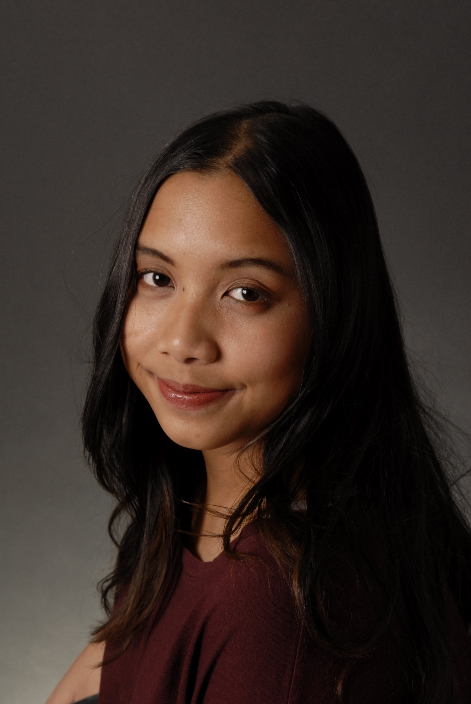
						<pre>

		<h4>
	    	Kezziah Ayuno, Psychology Undergraduate,
		Spring 2021 - 2022

		
		</h4>
		Contact: <a href="mailto:ayuno@ualberta.ca?" target="_top">ayuno@ualberta.ca</a>
    
    

    <br><br><br><br><br><br>><br><br><br>
		<div class="entry">
		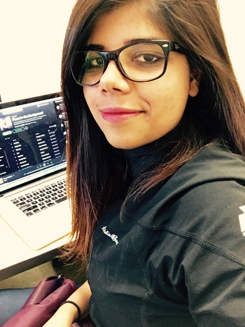
	<pre>
	<h4>
	Sucheta Chakravarty, Doctoral candidate,
	Fall 2015 - 2021
	Recipient of Doctoral recruitment scholarship 2015, University of Alberta.
	Research interests: Neural mechanisms of feedback based value learning in 
	humans, machine learning.</h4>
	Contact: <a href="mailto:sucheta@ualberta.ca?" target="_top">sucheta@ualberta.ca</a>
				
	<br><br><br><br><br>			
    <br><br><br><br><br><br>
	<div class="entry">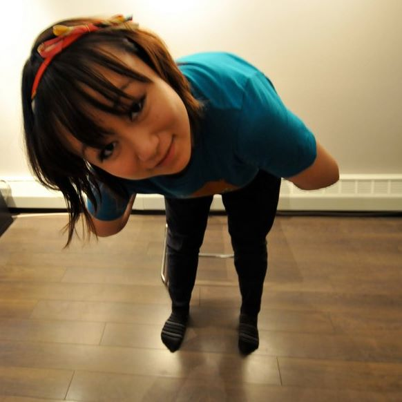
	<pre>
	<h4>
	Yvonne Chen, Phd
	Jan 2011 - April 2017,
	Recipient of Bennet B. Murdock Award for best poster at 
	the 2012 Context in Episodic Memory Symposium.	
	Research interest : The neural mechanisms of human memory 
	from encoding to retrieval</h4>
	Contact: <a href="mailto:yvonne.chen@ualberta.ca?" target="_top">yvonne.chen@ualberta.ca</a>

					</pre>
					<br><br><br><br><br><br><br><br><br><br><br><br><br>
					<div class="entry">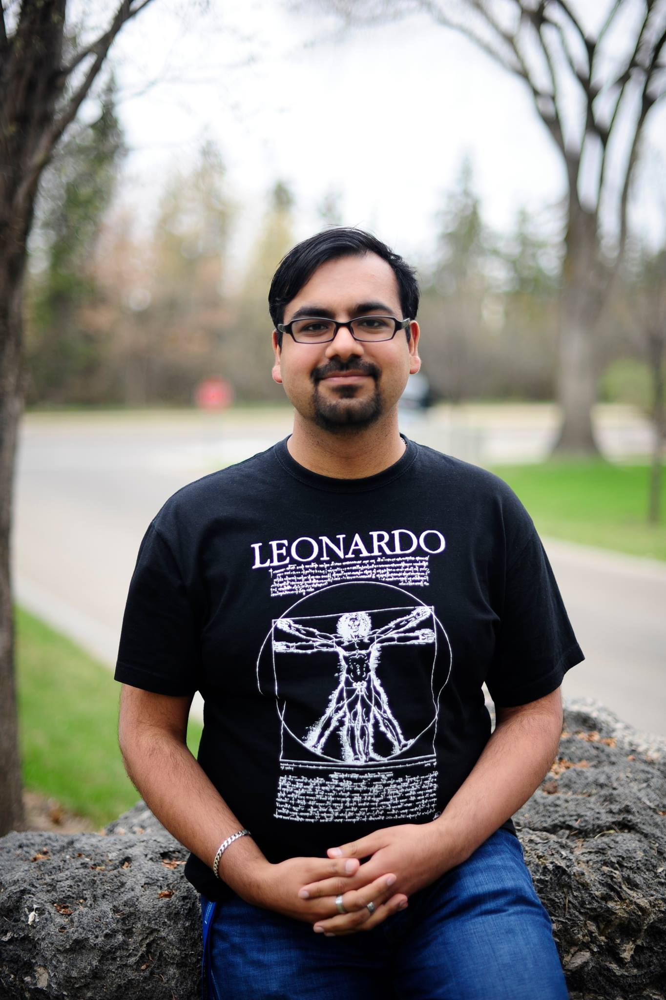
					<pre>
	<h4> 
	Christopher Madan, Psychology Phd
	Sept 2009 - 2013.
	Presently posdoctoral research fellow at Boston College
	Recipient of CIHR master’s fellowship, QEII doctoral fellowship, 
	DAAD graduate scholarship for study abroad (Germany), 
	NSERC doctoral fellowship (CGS-D) and 
	two Alberta Gaming Research Institute studentships.
	Thesis title : Influence Of Motivational Salience On Memory</h4>
	Contact : <href="http://www.cmadan.com">http://www.cmadan.com
					</pre>
					<br><br><br><br><br><br><br><br><br><br><br><br><br>
					<div class="entry">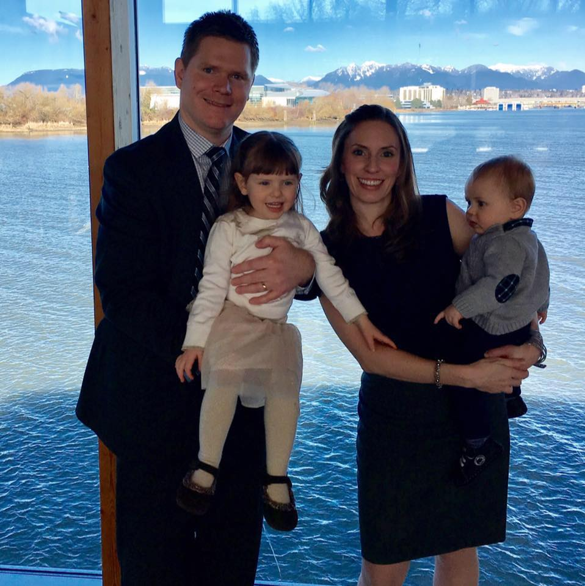
					<pre>
	<h4>
	Leanna Cruikshank, Neuroscience PhD 
	Jan. 2008 – June 2014
	Presently clinical trainee at University of British Columbia
	Recipient of QEII doctoral fellowship and Dissertation Fellowship.
	Thesis title : The electrophysiology of human visuomotor 
	integration during memory guided action.</h4>
					</pre>
    					</pre>
					<br><br><br><br><br><br><br><br><br><br><br><br><br>
					<div class="entry">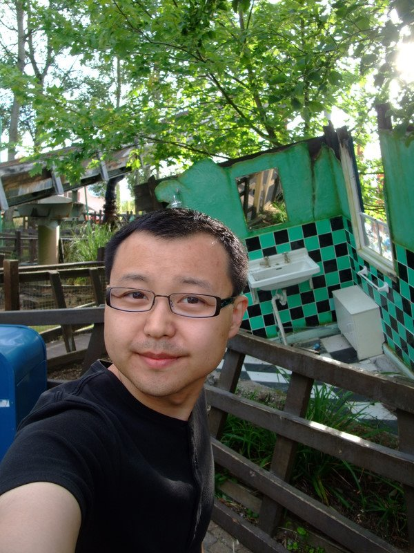
					<pre>
						
	<h4> 
	Yang Liu, Psychology PhD
	Aug 2008 - 2015
	Recipient of NSERC doctoral fellowship and a QEII-D. 
	Earned a MITACS Accelerate internship.
	Thesis title: Human order memory: insights from the 
	relative-order task.</h4>
	Contact:<a href="mailto:ly6@ualberta.ca?" target="_top">ly6@ualberta.ca</a>
    				</pre>
					<br><br><br><br><br><br><br><br><br><br><br><br><br>
					<!---->
					<pre>
	
	<h4> 
	Ulises Rodriguez Dominguez, PhD student<br>
	Sept. 2016 - July 2017
	Research Interest: Memory models</h4>
	Contact: <a href="mailto:ulises@ualberta.ca?" target="_top">ulises@ualberta.ca</a>

					</pre>
					<br><br><br><br><br><br><br><br><br><br><br><br><br>
					<!--<div class="entry">-->
					<pre>
	<h4> 
	Kenichi Kato, Psychology M.Sc candidate
	Sept. 2013 - Nov. 2017
	Research interest : Mathematical models of memory</h4>
	Contact: <a href="mailto:kkato1@ualberta.ca?" target="_top">kkato1@ualberta.ca</a>
					
					</pre>
					<br><br><br><br><br><br><br><br><br><br><br><br><br>
					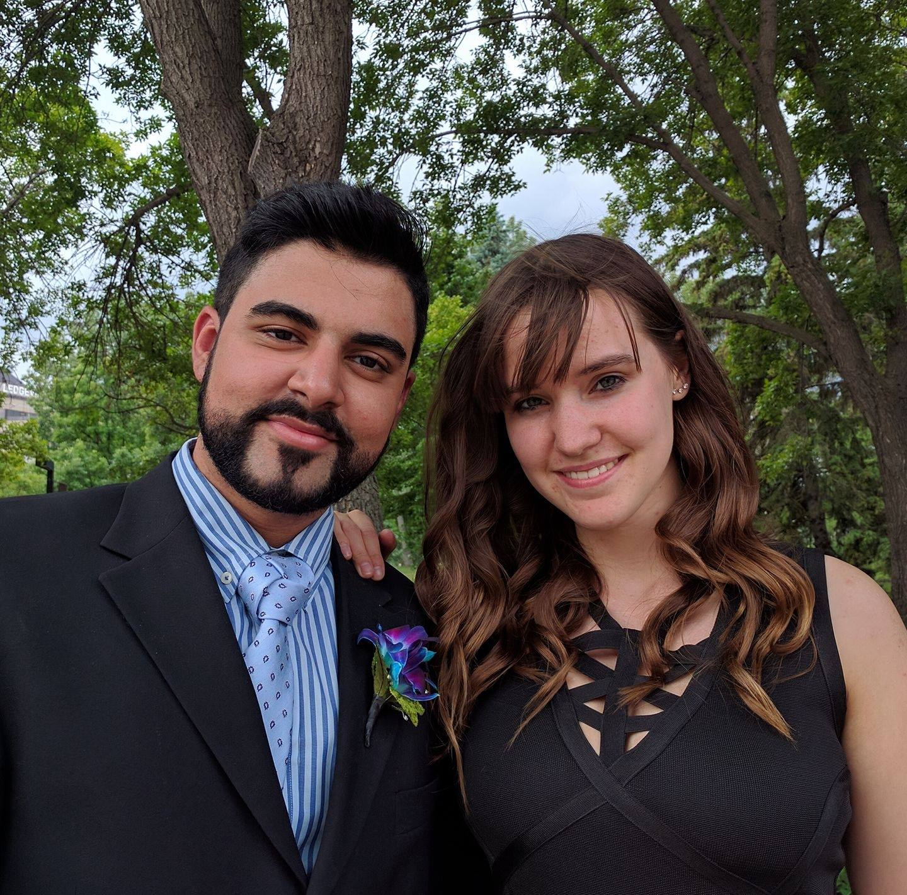
					<pre>

	<h4>
	Simranjit Grewal, 1st year Science undergraduate,
	November 2017 
	Research interest: </h4>
	Contact: <a href="mailto:sgrewal@ualberta.ca?" target="_top">sgrewal@ualberta.ca</a>
					</pre>
					<br><br><br><br><br><br><br><br><br><br><br><br><br>
					<!--<div class="entry">-->
					<pre>
	<h4>
	Lin Wang, PhD,
	Summer 2018 - Winter 2019</h4>
	Contact: <a href="mailto:lwang16@ualberta.ca?" target="_top">lwang16@ualberta.ca</a>
					</pre>
					<br><br><br><br><br><br><br><br><br><br><br><br><br>
					<!---->
					<pre>
	<h4>
	Isaac Ward, undergraduate,
	Spring/Summer 2018 - Winter 2019</h4>
	Contact: <a href="mailto:iward@ualberta.ca?" target="_top">iward@ualberta.ca</a>
					</pre>
					<br><br><br><br><br><br><br><br><br><br><br><br><br>					

					<!--
					<pre>
	<h4>
	Sara Jalali, 2nd year Neuroscience undergraduate,
	November 2017 - present
	Research interest: </h4>
	Contact: <a href="mailto:jalali@ualberta.ca?" target="_top">jalali@ualberta.ca</a>
					</pre>
					<br><br><br><br><br><br><br><br><br><br><br><br><br>-->
					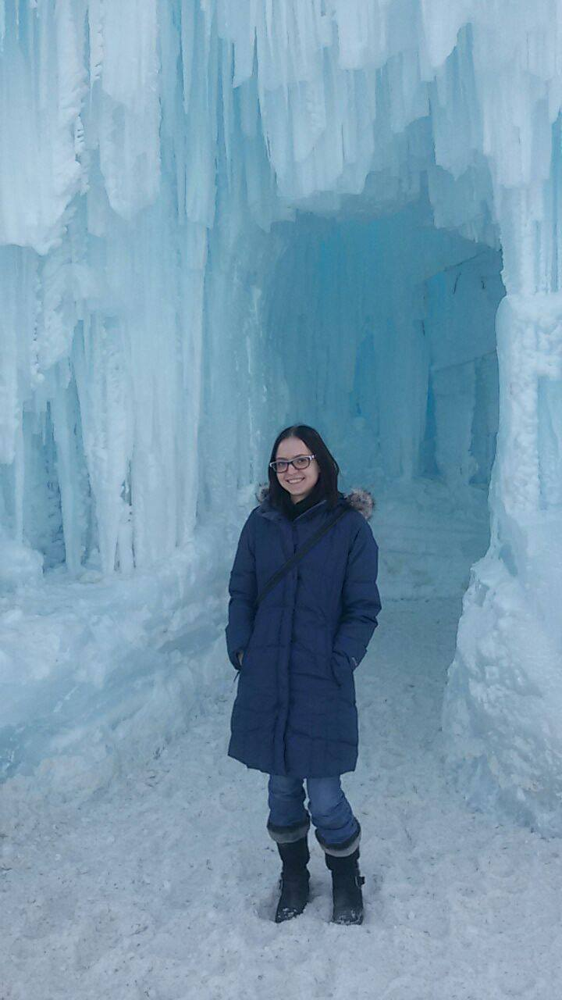
					<pre>
	<h4>
	Courtney Stolz, 4th year Psychology & Biology undergraduate,
	April 2017 
	Research interest: Effect of value on memory</h4>
	Contact: <a href="mailto:cstolz@ualberta.ca?" target="_top">cstolz@ualberta.ca</a>
					</pre>
					<br><br><br><br><br><br><br><br><br><br><br><br><br>
					
					
					<!---->
					<pre>
	<h4>
	Preet Parmar, undergraduate,
	Winter 2018 </h4>
	Contact: <a href="mailto:preet@ualberta.ca?" target="_top">preet@ualberta.ca</a>
					
					</pre>
					<br><br><br><br><br><br><br><br><br><br><br><br><br>
					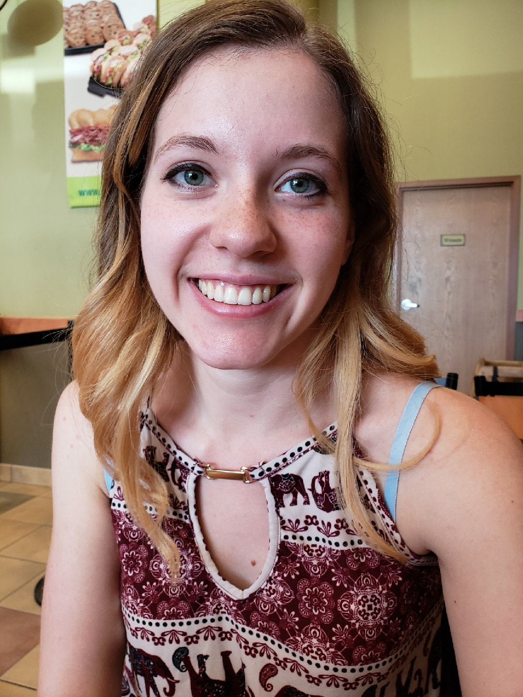
					<pre>
    <h4>
	Nicole Dittmann, 3rd year Neuroscience undergraduate,
	Winter 2017 - Winter 2019
	Research interest: </h4>
	Contact: <a href="mailto:ndittman@ualberta.ca?" target="_top">ndittman@ualberta.ca</a>
					</pre>
					<br><br><br><br><br><br><br><br><br><br><br><br><br>
					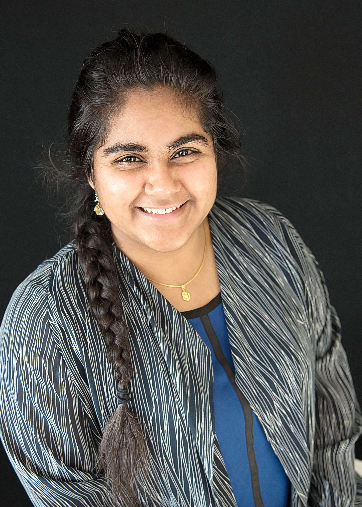
					<pre>
	<h4>
	Nitya Khetarpal, 2nd year Neuroscience undergraduate,
	Winter 2018 - Winter 2019</h4>
	Contact: <a href="mailto:nkhetarp@ualberta.ca?" target="_top">nkhetarp@ualberta.ca</a>
					</pre>
					<br><br><br><br><br><br><br><br><br><br><br><br><br>
					<!---->
					<pre>
	<h4>
	Briana Kroeker, undergraduate,
	Winter 2018 - Winter 2019</h4>
	Contact: <a href="mailto:bkroeker@ualberta.ca?" target="_top">bkroeker@ualberta.ca</a>
					</pre>
					<br><br><br><br><br><br><br><br><br><br><br><br><br>

					<!---->
					<pre>
	<h4>
	Sophie Trageser, undergraduate,
	Winter 2018 </h4>
	Contact: <a href="mailto:trageser@ualberta.ca?" target="_top">trageser@ualberta.ca</a>
					</pre>
					<br><br><br><br><br><br><br><br><br><br><br><br><br>
					<!---->
					<pre>
	<h4>
	Kaiyuan Xu, undergraduate,
	Winter 2018 - Spring/Summer 2020 </h4>
	Contact: <a href="mailto:kaiyuan@ualberta.ca?" target="_top">kaiyuan@ualberta.ca</a>
					</pre>
					<br><br><br><br><br><br><br><br><br><br><br><br><br>
					<div class="entry">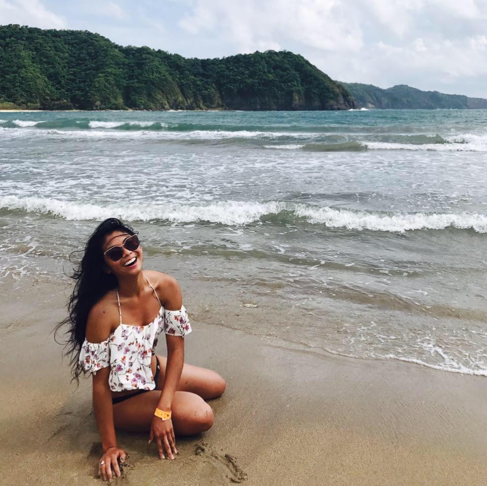
					<pre>

	<h4> 
	Tomi Ann Limcangco, Psychology undergraduate
	Psychology 496, Fall 2015 - Spring 2016
	Undergraduate research initiative, Summer 2016
	Research interest : Item memory and order memory</h4>
	Contact: <a href="mailto:tomiann@ualberta.ca?" target="_top">tomiann@ualberta.ca</a>


					</pre>
					<br><br><br><br><br><br><br><br><br><br><br><br><br>
					<div class="entry">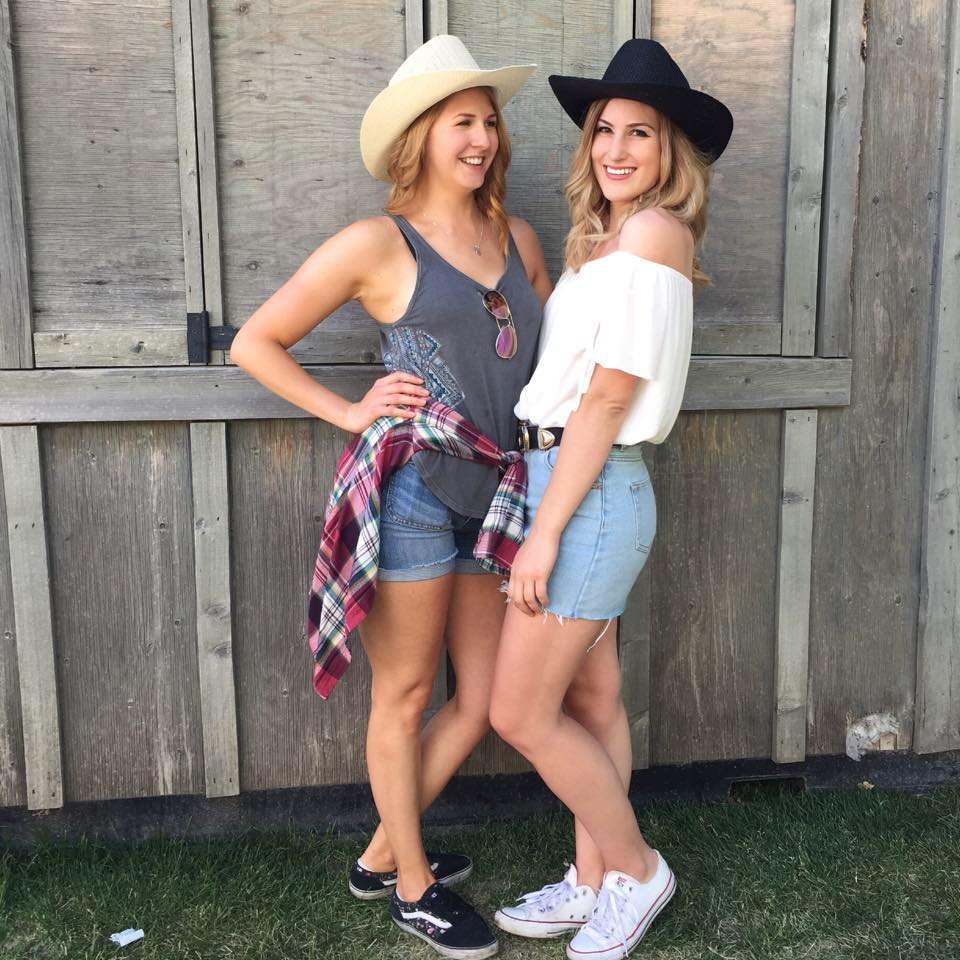
					<pre>
						
	<h4> 
	Hanna Warawa, undergraduate
	2016 - 2017</h4>
	Contact:<a href="mailto:hwarawa@ualberta.ca?" target="_top">hwarawa@ualberta.ca</a>

					<br><br><br><br><br><br><br><br><br><br><br><br><br>

                      <h4> 
					  Matthew Danyluik, Neuroscience Undergraduate, Fall 2019 - Fall 2021<br><br>
					  Zainab Sari, Neuroscience undergraduate, Fall 2015<br><br>
					  Angela Wan, undergraduate (Psychology 299), Fall 2015<br><br>
					  Anam Wattoo, undergraduate (Psychology 496), Fall 2014<br><br>
					  Avik Sharma, undergraduate (Psychology 496) and NSERC USRA, Jan 2014 - 2015<br><br>
					  Yondu Mori, undergraduate (Psychology Honours), 2013 - 2015<br><br>
					  Patricia (Ioana) Bacus, undergraduate (Psychology 496/8), Sept 2013 - May 2014<br><br>
					  Aditi Gupta, undergraduate (Psychology 496), May 2013 - March 2014<br><br>
					  Isha Ober, undergraduate (Neuroscience Honours, Psychology 496 and NSERC USRA) Jan 2013 - 2015<br><br>
					  Brittany Hopkins, undergraduate (Psychology 496), Jan 2013 - May 2013<br><br>
					  Monica Bottomley, undergraduate (Neuroscience Honours), July 2012 - May 2013<br><br>
					  Ivan Witt, undergraduate (Neuroscience Honours), Feb 2012<br><br>
					  Shrida Sahadevan, undergarduate (Neuroscience Honours and URI), Nov 2011 - 2015<br><br>
					  Nathan Ikuta, undergraduate (Psychology 496), Winter 2012<br><br>
					  Jumjury Hemmerich, undergraduate (Psychology 496), Spring 2010<br><br>
					  Bevin Cheng, undergraduate (Psychology 299, 496 and 498), Feb 2009 - 2012<br><br>
					  Jennifer Cole Andrews, undergraduate (Psychology 496 and 498), 2009 -2010<br><br>
					  Kathy Boulton, undergraduate (Psychology 496) and research assistant, Apr 2007 - 2008<br><br>
					  Jingjing Song, undergraduate (Psychology 299) and research assistant, Sept 2008 - 2009<br><br>
					  Enoch Ng, undergraduate (Psychology 496) and research assistant, Jan 2008 - Aug 2009<br><br>
					  Rachel Burton, undergraduate (Psychology Honours) and research assistant, Mar 2007 - April 2010<br><br>
					  Michelle Chan, undergraduate (Psychology 496, Canada Summer Jobs 2007, NSERC USRA 2008) and research assistant, Mar 2007 - Aug 2009 
					  and Psychology graduate student on lab rotation, Winter 2011.<br><br>
					  Adam Hughes, undergraduate research assistant, Oct 2006 - Aug 2009<br><br>
					  Mayank Rehani, undergraduate (Psychology 496, Canada Summer Jobs 2007) and research assistant, Oct 2006 - Aug 2009<br><br>
					  Darren Bedwell, research assistant (Summer temporary employment program), Oct 2006 - 2008<br><br>
					  <!--Mackenzie Glaholt, 
					  Research Assistant, The Rotman Research Institute, December 2002–August 2004<br>
 					  and Graduate Student, University of Toronto, September 2004–June 2006. 
  					  Currently: Postdoctoral fellow at University of California at San Diego<br><br>
  					  Signe Bray, Research Assistant, The Rotman Research Institute, September 2003–August 2004.<br> Subsequently: Graduate Student at Caltech.<br><br>
  					  Ehren Newman, Undergraduate Student, Brandeis University <br>
  					  currently Graduate Student at Princeton University<br><br>
  					  Rena Walles, Summer Undergraduate Student, Summer - 2001<br><br>
				          Stephanie Killian, Summer High School Research Intern, Summer - 1999, Brandeis University<br><br>-->
				          Isabel Lek, research assistant, May 2010–May 2011.<br><br>
				          Stan Hrybouski, research assistant, Sept 2010–April 2011
				          and Neuroscience graduate student on lab rotation, Winter 2013.<br><br>
				          Anton Poon, research assistant, Jan–April, 2010.<br><br>
				          Bridgette Gerson, research assistant, June 2009–Oct 2009.<br><br>
				          Mark Hueppelsheuser, research assistant, Jan 2008–Mar 2009.<br><br>

					 
					 
					 	
					  Andrea Shafer, Neuroscience graduate student on lab rotation, Winter 2009.<br><br>
					  Tara Whitten, Neuroscience graduate student on lab rotation, Fall 2008.<br><br>
					  Farhang Nazer, Neuroscience graduate student on lab rotation, Fall 2007.<br><br>


					 
				 </h4> 
				</div>
			</div>
		</div>
		<!-- end #content -->
		<!--<div id="sidebar">
			<ul>
				<li>
					<h2>Principal Investigator</h2>
					<p>Dr. Jeremy B. Caplan</p>
				</li>
				<li>
					<h2> Students </h2>
					<ul>
						<li><a href="#">Yang Liu</a></li>
						<li><a href="#">Yvonne Chen</a></li>
						<li><a href="#">Kenichi Kato</a></li>
						<li><a href="#">Sucheta Chakravarty</a></li>
						<li><a href="#">Angela</a></li>
						<li><a href="#">Tomi Ann</a></li>
						<li><a href="#">Zainab</a></li>
						<li><a href="#">Axita</a></li>
					</ul>


				</li>
				<li>
					<h2>Collaborators</h2>
					<ul>
						<li><a href="#">Clayton Dickson</a></li>
						<li><a href="#">Guy Earle</a></li>
						<li><a href="#">Esther Fujiwara</a></li>
						<li><a href="#">Christina Gagné</a></li>
						<li><a href="#">Takahiko Masuda</a></li>
						<li><a href="#">Bernhard Ross</a></li>
						<li><a href="#">Anthony Singhal</a></li>
						<li><a href="#">Tobias Sommer</a></li>
						<li><a href="#">Deborah Talmi</a></li>
						<li><a href="#">Nec metus sed donec</a></li>
					</ul>
				</li>
			</ul>
		</div>-->
		<!-- end #sidebar -->
		<div style="clear: both;">&nbsp;</div>
	</div>
	<!-- end #page -->
	<div id="footer"
		<p>&copy; Untitled. All rights reserved. Design by <a href="http://templated.co" rel="nofollow">TEMPLATED</a>.</p>
	</div>
	<!-- end #footer -->
</div>
</body>
</html>
